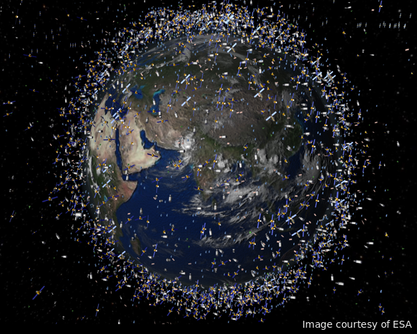

According to the United Nations Office for Outer Space Affairs (UNOOSA), there are 4,857 satellites currently orbiting the Earth (as of Jan. 2019),
and about 62.9% are in Low Earth Orbits (LEO) varying between 250 km and 1,500 km above the planet.
Here is an artist's impression based on real data (highly exaggerated). Although the growth of space objects is becoming a big issue, suprisingly, there have been only four major
collisions between satellites in the past 30 years. If we grossly assume that all of these satellites are uniformly spread out at 1,000 km above Earth,
what would be the average distance between satellites?
